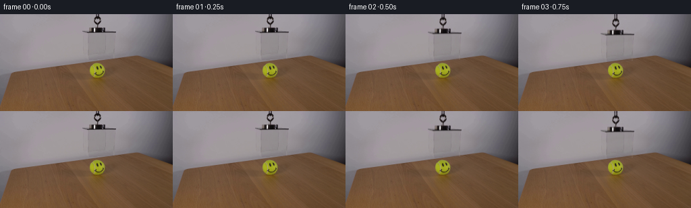

CODING AGENTS AS PIXEL WORLD MODELS
traex/GPT-6.1-Sol · 0097
点击播放 · 原生 RGB 像素
逐轮保存的候选
回放视频、检查图与代码变化。
每份候选均可单独播放。实际图片检查记录在下方工具轨迹中。
候选 01播放与检查图
点击播放 · 原生 RGB 像素

展开代码变化
--- 上一保存版本
+++ 本次保存版本
@@ -0,0 +1,164 @@
+from pathlib import Path
+import numpy as np
+from PIL import Image, ImageDraw
+from scipy.ndimage import map_coordinates, gaussian_filter1d, gaussian_filter
+import cv2
+from artifact_io import save
+
+ROOT = Path(__file__).resolve().parent
+H, W = 144, 256
+Y, X = np.mgrid[:H, :W].astype(np.float32)
+
+
+def polygon(points, feather=0.0):
+ scale = 8
+ canvas = Image.new('L', (W*scale,H*scale), 0)
+ ImageDraw.Draw(canvas).polygon([(round(x*scale),round(y*scale)) for x,y in points], fill=255)
+ m = np.asarray(canvas.resize((W,H), Image.Resampling.LANCZOS),dtype=np.float32)/255
+ if feather:
+ m = gaussian_filter(m,feather)
+ return np.clip(m,0,1)
+
+
+def background_estimate(image):
+ # Fit the visible, softly lit wall in coordinates parallel to the table's
+ # rear edge. All fitting samples are from this photograph outside the rig.
+ qs = np.arange(100,dtype=float)
+ xs = np.arange(94,202,dtype=float)
+ ys = qs[:,None]-.132*xs[None,:]
+ xx = np.broadcast_to(xs,ys.shape)
+ samples = np.stack([map_coordinates(image[:,:,c], [ys,xx], order=1, mode='nearest') for c in range(3)],axis=-1)
+ valid = np.broadcast_to((xs<=120)|(xs>=174),ys.shape).copy()
+ valid |= (((xs<137)|(xs>153))[None,:] & (ys<19))
+ valid &= (ys>=0)&(ys<H)
+ u = (xs-150)/50
+ A = np.stack([u**i for i in range(4)],-1)
+ coefficients = np.zeros((len(qs),4,3))
+ for i in range(len(qs)):
+ v=valid[i]
+ coefficients[i] = np.linalg.lstsq(A[v],samples[i,v],rcond=None)[0] if v.sum()>5 else coefficients[max(0,i-1)]
+ coefficients = gaussian_filter1d(coefficients,.8,axis=0)
+ q = Y+.132*X
+ u = (X-150)/50
+ plate = np.zeros((H,W,3),dtype=np.float64)
+ for i in range(4):
+ ci = np.stack([np.interp(q.ravel(),qs,coefficients[:,i,c]).reshape(H,W) for c in range(3)],-1)
+ plate += ci*u[:,:,None]**i
+ # Copy the tiny sensor/wall texture from a clean adjacent strip, without
+ # importing structure or generating temporally changing grain.
+ wall_noise=image[:76,80:120]-gaussian_filter(image[:76,80:120],(1.2,1.2,0))
+ noise=wall_noise[np.arange(H)[:,None]%76,np.arange(W)[None,:]%40]
+ plate += noise*.55
+ return plate.astype(np.float32)
+
+
+def shifted(field,dy,dx=0,border=0):
+ return cv2.remap(field.astype(np.float32),X-dx,Y-dy,cv2.INTER_LINEAR,
+ borderMode=cv2.BORDER_CONSTANT,borderValue=border)
+
+
+def motion(t):
+ # Cord is paid out at an almost uniform speed; the movement starts and
+ # finishes gently. The open lower rim ends on the tabletop, not the ball.
+ start=.10
+ stop=4.05
+ ramp=.48
+ distance=30.0
+ duration=stop-start
+ velocity=distance/(duration-ramp)
+ s=np.clip(t-start,0,duration)
+ if s<ramp:
+ return velocity*(s*s/(2*ramp)-ramp*np.sin(2*np.pi*s/ramp)/(4*np.pi**2))
+ if s>duration-ramp:
+ z=duration-s
+ return distance-velocity*(z*z/(2*ramp)-ramp*np.sin(2*np.pi*z/ramp)/(4*np.pi**2))
+ return velocity*(s-ramp/2)
+
+
+def make_frames():
+ source=np.asarray(Image.open(ROOT/'first_frame.png').convert('RGB'),dtype=np.float32)
+ predicted=background_estimate(source)
+ glass = polygon([(121.8,23.7),(156.0,23.5),(172.0,25.5),
+ (169.8,66.3),(131.0,68.0),(122.0,60.4)],.24)
+ clamp = polygon([(130.9,19.0),(151.8,18.9),(156.3,20.0),
+ (156.2,27.0),(130.7,28.1)],.25)
+ loop = polygon([(140.4,-2),(148.2,-2),(148.2,3.5),
+ (151.0,7.5),(150.8,11.0),(148.1,15.3),
+ (147.0,16.2),(147.0,20.5),(141.7,21.0),
+ (141.5,16.3),(138.1,13.3),(137.5,6.1)],.22)
+ removal=np.maximum.reduce([glass,clamp,loop])
+ plate = source*(1-removal[:,:,None])+predicted*removal[:,:,None]
+ # A local optical decomposition recovers the actual photographed edges,
+ # scratches, reflections, knot, and fastener. Glass is composited as a
+ # transmissive layer rather than as a translated rectangle of wallpaper.
+ orig_lum=source.mean(-1)
+ plate_lum=plate.mean(-1)
+ transmit=np.minimum(1,orig_lum/np.maximum(plate_lum,1))
+ hardware=np.maximum(clamp,loop)
+ hardware_trans=np.clip((orig_lum-12)/np.maximum(plate_lum-12,1),0,1)
+ bright_alpha=np.clip((orig_lum-175)/58,0,1)
+ hardware_trans=np.minimum(hardware_trans,1-bright_alpha)
+ transmit=transmit*(1-hardware)+hardware_trans*hardware
+ reflect=source-plate*transmit[:,:,None]
+ absorb=1-transmit
+ # A subpixel refractive offset is limited to the interior of the front
+ # sheet, so the tennis ball remains still and its drawing stays legible.
+ front=polygon([(132.6,29.0),(169.2,28.5),(166.7,63.9),(133.0,65.7)],.65)
+
+ # Cord entering from the upper frame boundary: use the exact dark/orange
+ # strands already present at the top of the source, continued as it pays out.
+ cord_abs=np.zeros((H,W),np.float32)
+ cord_ref=np.zeros((H,W,3),np.float32)
+ for yy in range(H):
+ row=yy%3
+ cord_abs[yy,141:148]=absorb[row,141:148]
+ cord_ref[yy,141:148]=reflect[row,141:148]
+
+ frames=[]
+ tmp=ROOT/'.tmp'
+ tmp.mkdir(exist_ok=True)
+ Image.fromarray(np.clip(plate,0,255).round().astype('uint8')).save(tmp/'clean_plate.png')
+ Image.fromarray((removal*255).round().astype('uint8')).save(tmp/'assembly_region.png')
+ for i in range(20):
+ if i==0:
+ frames.append(source.astype('uint8'))
+ continue
+ dy=float(motion(i/4))
+ image=plate.copy()
+ # Very weak cast shadow from transparent acrylic, becoming more
+ # localized as its lower edges approach their fixed table footprint.
+ proximity=np.exp(-(30-dy)/8.0)
+ footprint=polygon([(123.0,89.0),(156.5,87.3),(171.5,95.5),(132.0,97.8)])
+ cast=shifted(footprint,4.5,5.0)
+ cast=gaussian_filter(cast,2.0+(30-dy)*.05)
+ table=np.clip((source[:,:,0]-source[:,:,2]-15)/18,0,1)
+ # Exclude the ball itself from the shadow on the table.
+ tennis=np.clip((source[:,:,1]-source[:,:,2]-45)/25,0,1)
+ shadow=cast*(.025*proximity)*table*(1-tennis)
+ image*=1-shadow[:,:,None]
+
+ a=shifted(absorb,dy)
+ r=shifted(reflect,dy)
+ inside=shifted(front,dy)
+ refraction_strength=min(1,dy/7)
+ refracted=np.stack([cv2.remap(image[:,:,c],X+.22*refraction_strength,Y-.06*refraction_strength,
+ cv2.INTER_LINEAR,borderMode=cv2.BORDER_REPLICATE) for c in range(3)],-1)
+ image=image*(1-inside[:,:,None])+refracted*inside[:,:,None]
+ image=image*(1-a[:,:,None])+r
+
+ # Above the translated knot, the rope stays continuous up to the top.
+ exposed=np.clip(dy-Y,0,1)
+ ca=cord_abs*exposed
+ cr=cord_ref*exposed[:,:,None]
+ image=image*(1-ca[:,:,None])+cr
+ frame=np.clip(image,0,255).round().astype(np.uint8)
+ frames.append(frame)
+ if i in (1,4,8,12,16,19):
+ Image.fromarray(frame).save(tmp/f'candidate_{i:02d}.png')
+ frames=np.stack(frames)
+ assert np.array_equal(frames[0],np.asarray(Image.open(ROOT/'first_frame.png').convert('RGB')))
+ return frames
+
+
+if __name__=='__main__':
+ save(make_frames(),ROOT)
候选 02播放与检查图
点击播放 · 原生 RGB 像素
展开代码变化
--- 上一保存版本
+++ 本次保存版本
@@ -68,10 +68,10 @@
velocity=distance/(duration-ramp)
s=np.clip(t-start,0,duration)
if s<ramp:
- return velocity*(s*s/(2*ramp)-ramp*np.sin(2*np.pi*s/ramp)/(4*np.pi**2))
+ return velocity*.5*(s-ramp/np.pi*np.sin(np.pi*s/ramp))
if s>duration-ramp:
z=duration-s
- return distance-velocity*(z*z/(2*ramp)-ramp*np.sin(2*np.pi*z/ramp)/(4*np.pi**2))
+ return distance-velocity*.5*(z-ramp/np.pi*np.sin(np.pi*z/ramp))
return velocity*(s-ramp/2)
候选 03播放与检查图
可观测工具轨迹
实际执行的命令与返回图片。
命令 1exit 0
/bin/bash -lc "ls -la && cat prompt.txt && printf '\\n---RULES---\\n' && cat GENERATION_RULES.md"
命令 2exit 0
/bin/bash -lc "cat artifact_io.py && python - <<'PY'
from PIL import Image
import numpy as np
im=np.array(Image.open('first_frame.png'))
print(im.shape)
# grayscale ascii
chars=' .:-=+*#%@'
g=im.mean(2)
for y in range(0,144,3):
print(''.join(chars[min(9,int(g[y:y+3,x:x+2].mean()/256*10))] for x in range(0,256,2)))
print('rgb cells:')
for y in range(0,144,8):
print(y,' '.join(f'{x}:{tuple(im[y:y+4,x:x+4].mean((0,1)).astype(int))}' for x in range(0,256,16)))
PY"命令 3exit 0
/bin/bash -lc "python - <<'PY'
import numpy as np
from PIL import Image
from scipy.ndimage import gaussian_filter
im=np.array(Image.open('first_frame.png')).astype(float);g=im.mean(2)
for kind,a in [('gray',g),('detail',g-gaussian_filter(g,3)),('edges',np.hypot(*np.gradient(g))),('color',im[:,:,0]-im[:,:,2])]:
print('\\n',kind,'x100-195 every pixel')
for y in range(0,102):
if kind=='gray': s=''.join(' .,:;-~+=*#%@'[min(11,int(v/180*12))] for v in a[y,100:195])
elif kind=='detail':s=''.join('X' if v<-30 else 'x' if v<-15 else '-' if v<-6 else '.' if v<-2.5 else ' ' if v<2.5 else ':' if v<6 else '+' if v<15 else '*' if v<30 else '#' for v in a[y,100:195])
elif kind=='edges':s=''.join(' ' if v<2 else '.' if v<5 else ':' if v<10 else '+' if v<20 else '#' if v<40 else '@' for v in a[y,100:195])
else: s=''.join(' ' if v<5 else '.' if v<15 else '+' if v<30 else '#' if v<60 else '@' for v in a[y,100:195])
print(f'{y:3}',s)
PY"命令 4exit 0
/bin/bash -lc "python - <<'PY'
from PIL import Image
import numpy as np
from scipy.ndimage import gaussian_filter
im=np.array(Image.open('first_frame.png')).astype(float);g=im.mean(2)
print('X coords 110-181:')
print(' '+''.join(str(x//10%10) for x in range(110,182)))
print(' '+''.join(str(x%10) for x in range(110,182)))
for y in range(20,73):
# horizontal detrending to see lines
a=g[y]-gaussian_filter(g[y],5)
s=''.join('X' if v<-12 else 'x' if v<-6 else '-' if v<-3 else '.' if v<-1.5 else ' ' if v<1.5 else ':' if v<3 else '+' if v<6 else '*' if v<12 else '#' for v in a[110:182])
print(f'{y:3} {s}')
print('Gray by row each x122..173')
for y in [25,26,27,28,29,30,32,35,40,45,50,55,58,59,60,61,62,63,64,65,66,67,68,69,70]:
print(y,' '.join(f'{x}:{g[y,x]:.0f}' for x in range(120,176)))
PY"命令 5exit 0
/bin/bash -lc "python - <<'PY'
from PIL import Image
import numpy as np
im=np.array(Image.open('first_frame.png'))
for y in range(0,28):
print(y,' '.join(f'{x}:{tuple(im[y,x])}' for x in range(139,152)))
print('libs')
import cv2, scipy
print(cv2.__version__)
PY"命令 6exit 0
/bin/bash -lc "mkdir -p .tmp && cat > .tmp/analyze.py <<'PY'
import numpy as np
from PIL import Image
from scipy.ndimage import gaussian_filter
im=np.array(Image.open('first_frame.png')).astype(float)
y,x=np.mgrid[:144,:256]
u=(x-150)/50;v=(y-35)/35
terms=[u**i*v**j for i in range(4) for j in range(6) if i+j<=6]
F=np.stack(terms,-1)
wall=(x>99)&(x<198)&(y<72)&(y<84.3-.127*x-4)
obj=((x>119)&(x<176)&(y>18))|((x>136)&(x<153)&(y<=21))
fit=wall&~obj
A=F[fit];coef=np.linalg.lstsq(A,im[fit],rcond=None)[0]
bg=F@coef
print('RMSE',((bg[fit]-im[fit])**2).mean()**.5)
for yy in [0,10,20,28,35,45,55,60,65,67,70]:
print(yy,[(xx,np.round(bg[yy,xx]).astype(int).tolist(),np.round(im[yy,xx]).astype(int).tolist()) for xx in [119,125,135,145,155,165,175,185]])
PY
python .tmp/analyze.py"命令 7exit 0
/bin/bash -lc "cat > .tmp/reconstruct.py <<'PY'
import numpy as np
from PIL import Image
from scipy.ndimage import map_coordinates, gaussian_filter1d
im=np.asarray(Image.open('first_frame.png')).astype(float)
Q=np.arange(0,98,dtype=float)
xs=np.arange(94,201,dtype=float)
ycoord=Q[:,None]-.132*xs[None,:]
xcoord=np.broadcast_to(xs,ycoord.shape)
samp=np.stack([map_coordinates(im[:,:,c],[ycoord,xcoord],order=1,mode='nearest') for c in range(3)],-1)
# clean strips and only wall/table away from box
valid=((xs<=120)|(xs>=174))[None,:]*np.ones(ycoord.shape,dtype=bool)
valid &= (ycoord>=0)&(ycoord<144)
for i,q in enumerate(Q):
if q<37: valid[i] |= ((xs<137)|(xs>153)) & (ycoord[i]<19)
X=(xs-150)/50
A=np.stack([X**i for i in range(4)],-1)
coef=np.zeros((len(Q),4,3))
for i in range(len(Q)):
v=valid[i]
if v.sum()>5: coef[i]=np.linalg.lstsq(A[v],samp[i,v],rcond=None)[0]
else: coef[i]=coef[max(i-1,0)]
coef=gaussian_filter1d(coef,.9,axis=0)
y,x=np.mgrid[:144,:256]; q=y+.132*x
cf=np.stack([np.stack([np.interp(q.ravel(),Q,coef[:,i,c]).reshape(y.shape) for c in range(3)],-1) for i in range(4)],-2)
xx=(x-150)/50
bg=sum(cf[:,:,i]*xx[:,:,None]**i for i in range(4))
np.save('.tmp/bg.npy',bg)
for yy in [0,10,20,28,35,45,55,60,65,67,70]:
print(yy,[(xx,np.round(bg[yy,xx]).astype(int).tolist(),np.round(im[yy,xx]).astype(int).tolist()) for xx in [119,125,135,145,155,165,175,185]])
Image.fromarray(np.clip(bg,0,255).astype('uint8')).save('.tmp/bg.png')
PY
python .tmp/reconstruct.py"命令 8exit 0
/bin/bash -lc "python - <<'PY'
import numpy as np
from PIL import Image
im=np.asarray(Image.open('first_frame.png')).astype(float)
for x in [10,30,70,100,120,130,140,150,160,170,180,190,200,210,220,230,240,250]:
z=im[:,x,0]-im[:,x,2];ys=np.where((z>15)&(np.arange(144)>50))[0];print(x,ys[0],ys[0]+.132*x)
PY"命令 9exit 0
/bin/bash -lc "python - <<'PY'
import numpy as np
from PIL import Image
im=np.asarray(Image.open('first_frame.png')).astype(float); bg=np.load('.tmp/bg.npy');d=(im-bg).mean(2)
print('coords')
print(' '+''.join(str(x//10%10) for x in range(115,178)))
print(' '+''.join(str(x%10) for x in range(115,178)))
for y in range(20,74):
s=''.join('X' if v<-22 else 'x' if v<-14 else '-' if v<-8 else '.' if v<-4 else ' ' if v<2 else ':' if v<5 else '+' if v<9 else '*' if v<15 else '#' for v in d[y,115:178])
print(f'{y:3} {s}')
PY"命令 10exit 0
/bin/bash -lc "python - <<'PY'
import numpy as np
from PIL import Image
im=np.asarray(Image.open('first_frame.png')).astype(float)
for y in [33,45,55,60]:
print(y,[(x,np.round(im[y,x]).astype(int).tolist()) for x in [122,123,124,125,128,129,130,131,132,150,154,155,156,157,158,160,164,166,168,169,170,171,172]])
PY"命令 11exit 0
/bin/bash -lc "cat > generate.py <<'PY'
from pathlib import Path
import numpy as np
from PIL import Image, ImageDraw
from scipy.ndimage import map_coordinates, gaussian_filter1d, gaussian_filter
import cv2
from artifact_io import save
ROOT = Path(__file__).resolve().parent
H, W = 144, 256
Y, X = np.mgrid[:H, :W].astype(np.float32)
def polygon(points, feather=0.0):
scale = 8
canvas = Image.new('L', (W*scale,H*scale), 0)
ImageDraw.Draw(canvas).polygon([(round(x*scale),round(y*scale)) for x,y in points], fill=255)
m = np.asarray(canvas.resize((W,H), Image.Resampling.LANCZOS),dtype=np.float32)/255
if feather:
m = gaussian_filter(m,feather)
return np.clip(m,0,1)
def background_estimate(image):
# Fit the visible, softly lit wall in coordinates parallel to the table's
# rear edge. All fitting samples are from this photograph outside the rig.
qs = np.arange(100,dtype=float)
xs = np.arange(94,202,dtype=float)
ys = qs[:,None]-.132*xs[None,:]
xx = np.broadcast_to(xs,ys.shape)
samples = np.stack([map_coordinates(image[:,:,c], [ys,xx], order=1, mode='nearest') for c in range(3)],axis=-1)
valid = np.broadcast_to((xs<=120)|(xs>=174),ys.shape).copy()
valid |= (((xs<137)|(xs>153))[None,:] & (ys<19))
valid &= (ys>=0)&(ys<H)
u = (xs-150)/50
A = np.stack([u**i for i in range(4)],-1)
coefficients = np.zeros((len(qs),4,3))
for i in range(len(qs)):
v=valid[i]
coefficients[i] = np.linalg.lstsq(A[v],samples[i,v],rcond=None)[0] if v.sum()>5 else coefficients[max(0,i-1)]
coefficients = gaussian_filter1d(coefficients,.8,axis=0)
q = Y+.132*X
u = (X-150)/50
plate = np.zeros((H,W,3),dtype=np.float64)
for i in range(4):
ci = np.stack([np.interp(q.ravel(),qs,coefficients[:,i,c]).reshape(H,W) for c in range(3)],-1)
plate += ci*u[:,:,None]**i
# Copy the tiny sensor/wall texture from a clean adjacent strip, without
# importing structure or generating temporally changing grain.
wall_noise=image[:76,80:120]-gaussian_filter(image[:76,80:120],(1.2,1.2,0))
noise=wall_noise[np.arange(H)[:,None]%76,np.arange(W)[None,:]%40]
plate += noise*.55
return plate.astype(np.float32)
def shifted(field,dy,dx=0,border=0):
return cv2.remap(field.astype(np.float32),X-dx,Y-dy,cv2.INTER_LINEAR,
borderMode=cv2.BORDER_CONSTANT,borderValue=border)
def motion(t):
# Cord is paid out at an almost uniform speed; the movement starts and
# finishes gently. The open lower rim ends on the tabletop, not the ball.
start=.10
stop=4.05
ramp=.48
distance=30.0
duration=stop-start
velocity=distance/(duration-ramp)
s=np.clip(t-start,0,duration)
if s<ramp:
return velocity*(s*s/(2*ramp)-ramp*np.sin(2*np.pi*s/ramp)/(4*np.pi**2))
if s>duration-ramp:
z=duration-s
return distance-velocity*(z*z/(2*ramp)-ramp*np.sin(2*np.pi*z/ramp)/(4*np.pi**2))
return velocity*(s-ramp/2)
def make_frames():
source=np.asarray(Image.open(ROOT/'first_frame.png').convert('RGB'),dtype=np.float32)
predicted=background_estimate(source)
glass = polygon([(121.8,23.7),(156.0,23.5),(172.0,25.5),
(169.8,66.3),(131.0,68.0),(122.0,60.4)],.24)
clamp = polygon([(130.9,19.0),(151.8,18.9),(156.3,20.0),
(156.2,27.0),(130.7,28.1)],.25)
loop = polygon([(140.4,-2),(148.2,-2),(148.2,3.5),
(151.0,7.5),(150.8,11.0),(148.1,15.3),
(147.0,16.2),(147.0,20.5),(141.7,21.0),
(141.5,16.3),(138.1,13.3),(137.5,6.1)],.22)
removal=np.maximum.reduce([glass,clamp,loop])
plate = source*(1-removal[:,:,None])+predicted*removal[:,:,None]
# A local optical decomposition recovers the actual photographed edges,
# scratches, reflections, knot, and fastener. Glass is composited as a
# transmissive layer rather than as a translated rectangle of wallpaper.
orig_lum=source.mean(-1)
plate_lum=plate.mean(-1)
transmit=np.minimum(1,orig_lum/np.maximum(plate_lum,1))
hardware=np.maximum(clamp,loop)
hardware_trans=np.clip((orig_lum-12)/np.maximum(plate_lum-12,1),0,1)
bright_alpha=np.clip((orig_lum-175)/58,0,1)
hardware_trans=np.minimum(hardware_trans,1-bright_alpha)
transmit=transmit*(1-hardware)+hardware_trans*hardware
reflect=source-plate*transmit[:,:,None]
absorb=1-transmit
# A subpixel refractive offset is limited to the interior of the front
# sheet, so the tennis ball remains still and its drawing stays legible.
front=polygon([(132.6,29.0),(169.2,28.5),(166.7,63.9),(133.0,65.7)],.65)
# Cord entering from the upper frame boundary: use the exact dark/orange
# strands already present at the top of the source, continued as it pays out.
cord_abs=np.zeros((H,W),np.float32)
cord_ref=np.zeros((H,W,3),np.float32)
for yy in range(H):
row=yy%3
cord_abs[yy,141:148]=absorb[row,141:148]
cord_ref[yy,141:148]=reflect[row,141:148]
frames=[]
tmp=ROOT/'.tmp'
tmp.mkdir(exist_ok=True)
Image.fromarray(np.clip(plate,0,255).round().astype('uint8')).save(tmp/'clean_plate.png')
Image.fromarray((removal*255).round().astype('uint8')).save(tmp/'assembly_region.png')
for i in range(20):
if i==0:
frames.append(source.astype('uint8'))
continue
dy=float(motion(i/4))
image=plate.copy()
# Very weak cast shadow from transparent acrylic, becoming more
# localized as its lower edges approach their fixed table footprint.
proximity=np.exp(-(30-dy)/8.0)
footprint=polygon([(123.0,89.0),(156.5,87.3),(171.5,95.5),(132.0,97.8)])
cast=shifted(footprint,4.5,5.0)
cast=gaussian_filter(cast,2.0+(30-dy)*.05)
table=np.clip((source[:,:,0]-source[:,:,2]-15)/18,0,1)
# Exclude the ball itself from the shadow on the table.
tennis=np.clip((source[:,:,1]-source[:,:,2]-45)/25,0,1)
shadow=cast*(.025*proximity)*table*(1-tennis)
image*=1-shadow[:,:,None]
a=shifted(absorb,dy)
r=shifted(reflect,dy)
inside=shifted(front,dy)
refraction_strength=min(1,dy/7)
refracted=np.stack([cv2.remap(image[:,:,c],X+.22*refraction_strength,Y-.06*refraction_strength,
cv2.INTER_LINEAR,borderMode=cv2.BORDER_REPLICATE) for c in range(3)],-1)
image=image*(1-inside[:,:,None])+refracted*inside[:,:,None]
image=image*(1-a[:,:,None])+r
# Above the translated knot, the rope stays continuous up to the top.
exposed=np.clip(dy-Y,0,1)
ca=cord_abs*exposed
cr=cord_ref*exposed[:,:,None]
image=image*(1-ca[:,:,None])+cr
frame=np.clip(image,0,255).round().astype(np.uint8)
frames.append(frame)
if i in (1,4,8,12,16,19):
Image.fromarray(frame).save(tmp/f'candidate_{i:02d}.png')
frames=np.stack(frames)
assert np.array_equal(frames[0],np.asarray(Image.open(ROOT/'first_frame.png').convert('RGB')))
return frames
if __name__=='__main__':
save(make_frames(),ROOT)
PY
python generate.py"命令 12exit 0
/bin/bash -lc "python - <<'PY'
import numpy as np
from PIL import Image
for n in [0,1,8,19]:
im=np.asarray(Image.open(f'frames/{n:02d}.png')).astype(float)
print('\\nFRAME',n,'x110-180 y0-104 two horizontal px')
for y in range(0,105,2):
g=im[y:y+2].mean(2)
print(f'{y:3}', ''.join(' .,:;-~+=*#%@'[min(11,int(v/185*12))] for v in g[:,110:180].reshape(2,35,2).mean((0,2))))
# Compare face pixels.
print('ball delta',np.abs(im[74:93,135:152]-np.asarray(Image.open('first_frame.png'))[74:93,135:152]).mean((0,1)))
frames=np.stack([np.asarray(Image.open(f'frames/{i:02d}.png')) for i in range(20)])
print('Frame changes', [round(float(np.abs(frames[i].astype(float)-frames[i-1]).mean()),3) for i in range(1,20)])
print('max values',frames.min(),frames.max())
PY"命令 13exit 0
/bin/bash -lc "python generate.py && python - <<'PY'
from PIL import Image
import numpy as np
from pathlib import Path
from generate import motion
p=Path('.')
f=np.stack([np.asarray(Image.open(p/'frames'/f'{i:02d}.png')) for i in range(20)])
z=np.load('pixels.npz')['pixels']
assert f.shape==(20,144,256,3) and f.dtype==np.uint8
assert np.array_equal(f[0],np.asarray(Image.open('first_frame.png')))
assert z.shape==(144,256,20)
assert np.allclose(np.array([motion(t) for t in np.linspace(0,5,1001)]),np.maximum.accumulate([motion(t) for t in np.linspace(0,5,1001)]))
print('Validated 20 RGB frames, 256x144; first frame identical.')
print('Final descent:', motion(4.75))
print('Artifacts:',[(n,(p/n).stat().st_size) for n in ['pixels.npz','index.html','inspection.png','generate.py']])
PY"保存候选 3 份；完成命令 13 次；可验证图片返回 0 张。原始 API 响应与完整日志保留在本地。